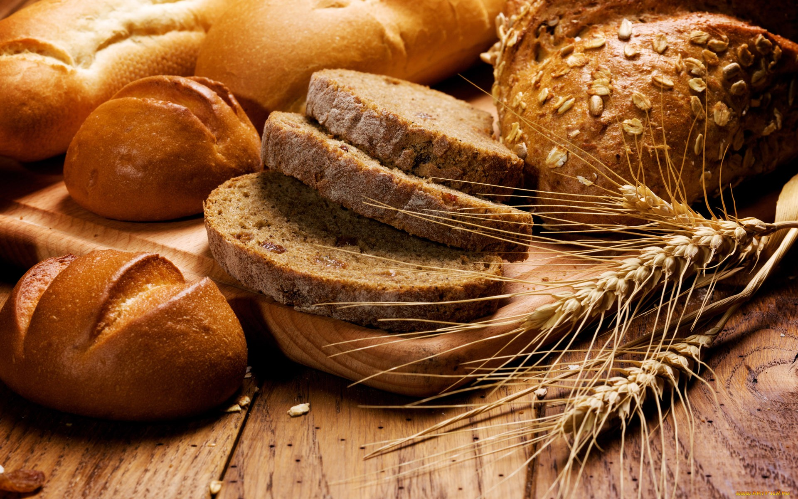

<!-- Sección de Introducción -->
<section class="section-home mt-5 mx-auto pb-2">
    <div class="container text-center">
      <!-- Imagen Logo -->
      <div class="d-flex justify-content-center m-2">
        
      </div>
      
      <!-- Texto de Introducción -->
      <h3 class="lead w-75 mx-auto">
        Elaborados de manera <strong>artesanal</strong>, utilizando
        <strong>productos orgánicos</strong> y <strong>masa madre</strong> para
        asegurar la mejor calidad. ¡Te esperamos!
      </h3>
    </div>
  </section>
  
<!-- Carousel Automático -->
<div id="carouselExampleIndicators" class="carousel slide mx-auto mb-5" data-bs-ride="carousel" style="width: 90%;">
    <!-- Indicadores -->
    <div class="carousel-indicators">
      <button type="button" data-bs-target="#carouselExampleIndicators" data-bs-slide-to="0" class="active" aria-current="true" aria-label="Slide 1"></button>
      <button type="button" data-bs-target="#carouselExampleIndicators" data-bs-slide-to="1" aria-label="Slide 2"></button>
      <button type="button" data-bs-target="#carouselExampleIndicators" data-bs-slide-to="2" aria-label="Slide 3"></button>
    </div>
  
    <!-- Imágenes del carrusel --> 
    <div class="carousel-inner">
      <div class="carousel-item active">
        
      </div>
      <div class="carousel-item">
        
      </div>
      <div class="carousel-item">
        
      </div>
    </div>
  </div>